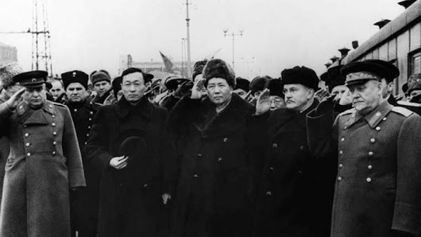

|
回目录 回主页 |

假象——外交巨人 真相——外交侏儒
篇首 先请看燕山大学网络上一篇有关党课讲座新闻报道的部分内容： 【2007年11月22日下午4:50，在机械馆J3教室，机械工程学院第四期党校邀请燕山大学原党委书记聂绍珉老师，做了一场题为《当代大学生党员的素质》的主题讲座。同学们学习热情很高，都非常珍惜这次来之不易的向老书记学习的机会，不仅认真听讲，还细心作了笔记。 …… 聂书记从自身说起，他已经六十六岁了，亲身经历了战乱，对当时的情景记忆深刻，也亲身经历了三年自然灾害，那种苦难铭刻在心，在这种种灾难中，是中国共产党带领人民走出阴霾，走出泥淖，带领全国上下走向光明。记得上海的跑马场外竖着一块牌子，“华人与狗不得入内”，它是当时中国地位的真实写照。但是，1949年10月1号在天安门城楼上，毛主席的一句“中国人民站起来了”，宣告了我们的耻辱已经随着历史的车轮永远成为过去了。建国以后的第一件事，是废除了一千个不平等条约。】 我不知道燕山大学原党委书记聂绍珉几十年来完全被人所骗，还是他完全有心蒙骗燕山大学的大学生。他所说“三年自然灾害”，其实是一个纯粹的谎言（参见本书3.2.9《“三年自然灾害”的说法是谎言》），而“1949年10月1号在天安门城楼上，毛泽东的一句‘中国人民站起来了’”，其实也是无中生有，因为当天毛泽东在天安门城楼上宣读了《中央人民政府公告》，并没有说这一句话。 聂绍珉说：“建国以后的第一件事，是废除了一千个不平等条约。”也是纯粹的谎言。这句谎言，让不明真象的大学生听众和读者，肯定以为看见了一个外交巨人。 从互联网上的《不平等条约_百度百科》网页，可知美国、法国、日本、德国、意大利、奥匈帝国对中国的不平等条约，到1946年的时候已经摆平，只是英国留下香港岛和新界的尾巴，还有沙皇俄国的接班人苏联继续占领由不平等条约而得到的一百五十多万平方公里的中国领土： 【1917年，德国和奥匈帝国因第一次世界大战中成为中国的敌对国，而被废除不平等条约。1917年苏联自愿放弃其在中国的特权（事后未完全兑现，亦无退还条约中获得的领土）。1943年，美国和英国自愿放弃其在中国的特权。意大利和日本因第二次世界大战中成为中国的敌对国失去他们的特殊地位。1946年，法国放弃其在中国的特权。中国收回了租界，收回了关税主权，废除了领事裁判权与最惠国待遇。】 我数了一下《不平等条约_百度百科》网页所列不平等条约的数量，仅仅是34个，而不是一千个。聂绍珉胡吹塑造虚假的毛泽东伟大形象，实在可笑。 鄙人在此告诉读者，毛泽东主政中国大陆以后，不但没有收回在苏联手中的一百五十多万平方公里的领土，而且在斯大林的压力下还承认了外蒙古的独立，还与苏联签订了新的不平等条约。毛泽东不但不是外交巨人，其实连普通外交家的外交能力都比不上，而是一个实实在在的外交侏儒。在外交侏儒毛泽东的一系列目中无人的胡作非为下，中华人民共和国政府得罪了联合国，得罪了地球村中众多国家，1951年被联合国大会实事求是地戴上了侵略者“桂冠”，成为全人类真正爱好和平人民的公敌，亿万大陆地区中国人，只好以吃不着葡萄嫌葡萄酸的心态远望联合国“被美帝国主义操纵”。后来外交侏儒毛泽东又与“同志加兄弟”的苏联老大哥反目成仇。文革初期热衷于搞世界革命，夜郎自大说什么“世界已进入毛泽东思想的新时代”，结果触怒地球村各地村民，中华人民共和国跌入空前绝后的孤立境地。 外交侏儒毛泽东梦想当外交巨人，拿贫穷至极的中国人的民脂民膏收买一些小国家，此举直接损伤中国人的利益，祸国殃民尤为恶劣。 7.1、中华大地改变国家名称损失很多外交资源 一个公司，如果赶走老领导的新班子将公司的名称由A公司改成了B公司，去联系老客户的时候，人家如果不买B公司代表的帐，就难受了，尤其是老领导还在用A公司的名义做生意的时候。国家对外交往与公司对外交往颇多相似。 因为毛泽东是1949年10月1日新成立的中华人民共和国中央人民政府主席，所以人们称他为开国元首，其实这是以损失大量外交资源为代价得到的“丰功伟绩”。改变国号的行为，导致丧失了不费吹灰之力名正言顺地继承中华民国一切外交地位包括联合国安理会常任理事国地位的机会，为二十多年时间里只能在联合国外面当听众打下了基础。 据李敖在凤凰卫视节目《李敖有话说》中所讲，1965年毛泽东在接受法国《人道报》记者马嘉丽采访时表示，后悔不沿用“中华民国”国号，否则可以减少很多麻烦，比如进入联合国安理会。这也就是对外国人偶尔说说而已，对中国人，毛泽东是绝对不说这种话的。 7.2、毛泽东在莫斯科耍赖 1949年12月，中华人民共和国中央人民政府成立才两个多月，国内事情千头万绪不管了，毛泽东就到莫斯科给斯大林祝寿去了，外交能力低劣的他，采取了类似无赖孩子耍赖一样的非常规手段，才在1950年2月如愿以偿与苏联签订了条约。其实毛泽东心里也不好受。 1956年2月13日，苏联出现了《关于个人崇拜及其后果》的秘密报告，斯大林的神话气球漏气了。3月24日，在中共中央政治局扩大会议上，毛泽东也发起了牢骚： 【我在莫斯科整整待了两个月。这两个月很不好受。当然我们是去祝寿的。……但我此行的目的不单是祝寿，主要是要订立中苏友好同盟互助条约。……我到莫斯科第一次见到斯大林就向他提出这个问题。当时苏联采取拖延的办法，一直不提这个问题。在开完斯大林的祝寿会以后，我在苏联没事干，我就发牢骚，骂娘，估计他们会听到的。我对苏联党的联络员说，我在这里没事。但是我做了很重要的事情，第一吃饭，第二拉屎，第三睡觉。每天做这三件事。他们让我参观，我不去，不答应签订同盟条约我哪里也不去。这样僵持到了1950年元旦那一天，斯大林才同意订同盟条约。……但是，在谈判中他们明显表现出对我们的不信任，至少不完全信任。中长铁路要中苏共同管理，旅顺口要做苏联的海军基地，在靠近苏联的新疆搞了什么合股公司，总之，新疆和东北三省他是不想放手的。】 1957年11月，毛泽东率党政代表团赴莫斯科，参加苏联十月革命40周年庆典。在此期间，毛泽东与波兰共产党第一书记哥穆尔卡谈话时，又说到当年访苏受委屈的事： 【我第一次到莫斯科来，斯大林是不高兴的。本来我们到莫斯科来，并不完全是为了祝寿，还希望中苏两国订个条约。但是祝寿完了以后，斯大林就把这个事搁起来，不想跟我们订条约。有一次我生气了，就直接给斯大林挂电话，在电话里我说，我到这里来不完全是给你祝寿的，也希望我们订一个条约。现在我没有事情做，你看怎么办？这时斯大林火了，他把电话挂了。后来我又一次去电话，那边说斯大林不在家，你有事情可以找米高扬。这个时候我也火了，我就抓住苏共联络部派来跟我联络的同志大发脾气，狠狠骂了他一顿。他问我去不去参观，我说没有兴趣。……既然现在没有工作可做，那么我的任务就是三个：第一个任务是吃饭，第二个任务是拉屎，第三个任务是睡觉。我拍着桌子狠狠批评了他们一顿，目的就是要他告诉斯大林。后来斯大林也大发脾气，把我们代表团和他们政治局委员召集在一起开了一次会，狠狠批评了我们一顿。……后来他们想一想，还是签个条约好，因为不签条约我就不走。他们知道我是下了这个决心的。……我们也做了让步……斯大林还特别关照，不许外国人到东北和新疆。这些我们当时都忍了下来，当时也没办法改变。所以从1949年至1953年都按苏方要求做了……1950年初在莫斯科签订中苏友好同盟条约后，我们举行了一个招待会，答谢苏联的招待。……斯大林也起来祝酒，说的都是好话，说中国如何如何好。因为我们是按照他的意思签订了一个同盟条约。他也按照我们的意思签订了一个同盟条约。跟斯大林这样的人要斗，你不斗他就要把你整下去。】 7.2.1、毛泽东放弃中国在外蒙古地区的主权 值得玩味的是毛泽东所说：“我们是按照他的意思签订了一个同盟条约。他也按照我们的意思签订了一个同盟条约。” 跟斯大林这样的人打交道，要想占便宜，那无异于与虎谋皮。毛泽东也未必有在具体条款上占便宜的想法。但问题是，既然斯大林极不愿意签订这项条约，只是在毛泽东软磨硬缠、死皮赖脸耍赖之下万般无奈地坐到谈判桌前，那毛泽东要在具体条款上谋求平等也决不可能，或者说，斯大林就势必要在具体条款上占尽便宜，因为他随时可以拂袖而去。签订条约这件事本身，斯大林表面上是极不愿意的，但终于坐到了谈判桌前，这就是毛泽东说的：“他也按照我们的意思签订了一个同盟条约”；而在条约的具体条款上由斯大林说了算，这就是毛泽东说的：“我们是按照他的意思签订了一个同盟条约”。 起初斯大林既不愿意签订条约，不能排除这是老奸巨滑稳坐钓鱼台的斯大林谈判战略战术实施的另类准备阶段，因为斯大林的外交思维非常发达，其发达程度是毛泽东望尘莫及的。为什么我说斯大林外交思维很发达，读者只要知道斯大林在联合国给苏联争取到苏联、乌克兰、白俄罗斯三个席位就不难理解了。乌克兰、白俄罗斯在苏联（全称“苏维埃社会主义共和国联盟”）版图范围之内，其身份地位，只相当于中国的一个省，但是斯大林给它们弄上了联合国席位，这样，苏联在联合国大会上实际是就有了三个席位，投票的时候就有三张表决权票。斯大林与毛泽东在外交领域能力的高下差别，实际就是云泥之别，在是否维护自己所代表的国家、人民的利益方面，毫无疑问也是云泥之别。毛泽东出卖国家利益、国民利益给苏联，出卖国家利益、人民利益给阿尔巴尼亚等小国家，出卖国家利益、人民利益给侵略过中国的富裕国家日本。 正因为“我们是按照他的意思签订了一个同盟条约”，所以斯大林一开始虽然极不愿意签订这条约，但最终还是很满意的。当时毛泽东在国家主权和国家利益上做出了多方面的重大“让步”，包括承认外蒙古的独立地位，才与苏方缔结了这项条约。但这又决不可以与近代以来一系列丧权辱国的条约相提并论。此前的那些不平等条约，都是列强强加于中国的，而此番不平等的《中苏友好同盟互助条约》，以及秘密的《补充协定》，则是毛泽东死皮赖脸耍赖追求来的。被人暴力强奸和死皮赖脸耍赖与人通奸，在失去处女膜方面是一样的，但是在道德意义上是截然不同的。 毛泽东说：“跟斯大林这样的人要斗，你不斗他就要把你整下去。”这决不可理解为毛泽东在号召当时的中国人与苏联斗。这“斗”，仅限于毛泽东用死皮赖脸的方法把条约签下来。主子斯大林吩咐的：“不许外国人到东北和新疆”，奴才毛泽东自然会坚决遵照执行，这里决没有任何斗的痕迹。1953年3月5日，斯大林死了。毛泽东写了文章《最伟大的友谊》，发表在《人民日报》3月9日第一版，表示纪念。毛泽东写的文章中的内容：“我们失去了伟大的导师和最真挚的朋友——斯大林同志。这是多么的不幸呵！这个不幸所给予我们的悲痛，是不能够用言语来形容的。”与毛泽东后来亲口所说：“跟斯大林这样的人要斗，你不斗他就要把你整下去”相比，其性质差别如同硫酸与烧碱相比，形象一点来比，颇有点高高的喜马拉雅山与深深的马利阿纳海沟相比的感觉。 1956年3月苏共《关于个人崇拜及其后果》的秘密报告传到中共中央，在第一次为此召开会议讨论怎么办的3月19日中共中央政治局扩大会议上，毛泽东最为激动： 【提起斯大林，我们就有三肚子气——同志们都晓得，还是在中央苏区时期，王明在莫斯科遥控我们党……那时候的斯大林，就是王明、博古这些自称是“真正的布尔什维克党人”的太上皇…… 在抗日战争开始时期，又是斯大林支持王明的“一切通过统一战线”、“一切服从统一战线”…… 当着新中国成立以后，我去了莫斯科，那是一次很令人生气的见面——开始时，他竟不同意签订友好同盟互助条约，逼迫我们放弃对外蒙的主权要求，还要长期租用东北的中长铁路和旅顺港……】 156万平方公里的外蒙古地区中国主权，毛泽东在压力下被迫放弃了。 受斯大林压力而卖国，毛泽东心里肯定非常痛苦，1956年在北京发牢骚、1957年在莫斯科发牢骚以后，1958年在北京与外交部长陈毅又提起这件伤心事：“我两次去莫斯科，头一次去，就不是以平等待我，那是什么兄弟党，是父子党……” 来源：毛泽东：假象与真相 作者：钟波 |
回目录 回主页 |